2026
Conference
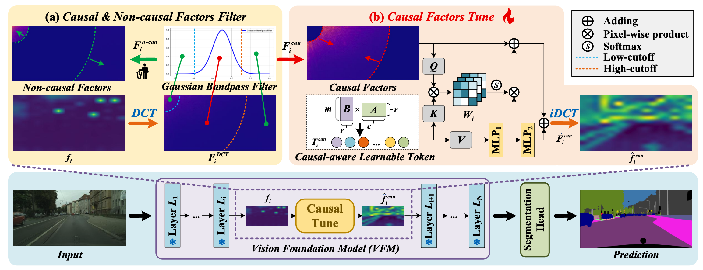
Causal-Tune: Mining Causal Factors from Vision Foundation Models for Domain Generalized Semantic Segmentation
AAAI 2026
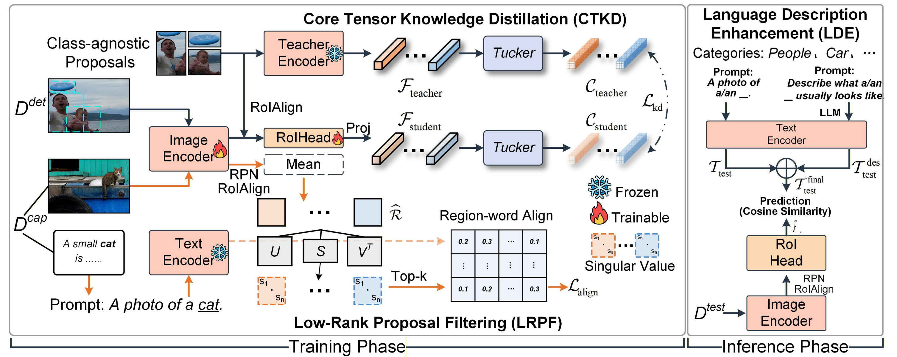
Tensor Decomposition and Language Description for Open-Vocabulary Object Detection
AAAI 2026
Journal
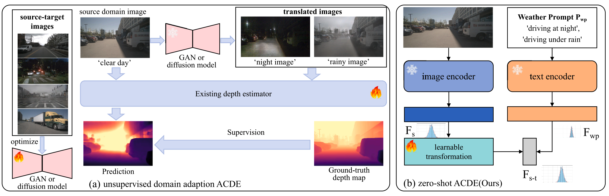
WPD: Weather prompt driven zero-shot adverse condition depth estimation
Pattern Recognition 2026
2025
Conference
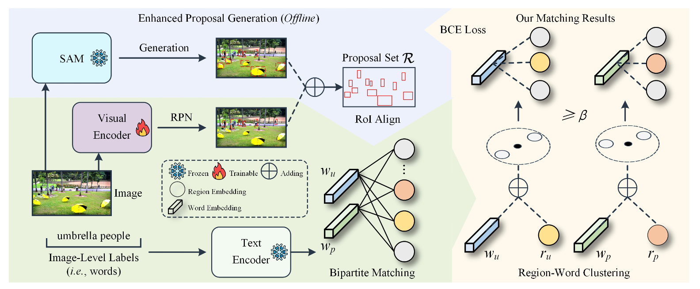
SAM based Region-Word Clustering and Inference ScoreAdjusting for Open-Vocabulary Object Detection
ACM MM 2025
Journal

ILD: Image-level Labels Driven Active Learning Object Detection
IEEE Transactions on Circuits and Systems for Video Technology 2025
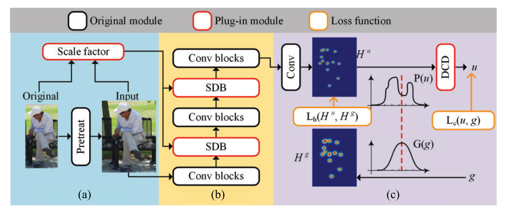
Revising Representation and Target Deviations for Accurate Human Pose Estimation
IEEE Transactions on Neural Networks and Learning Systems 2025
2024
Conference
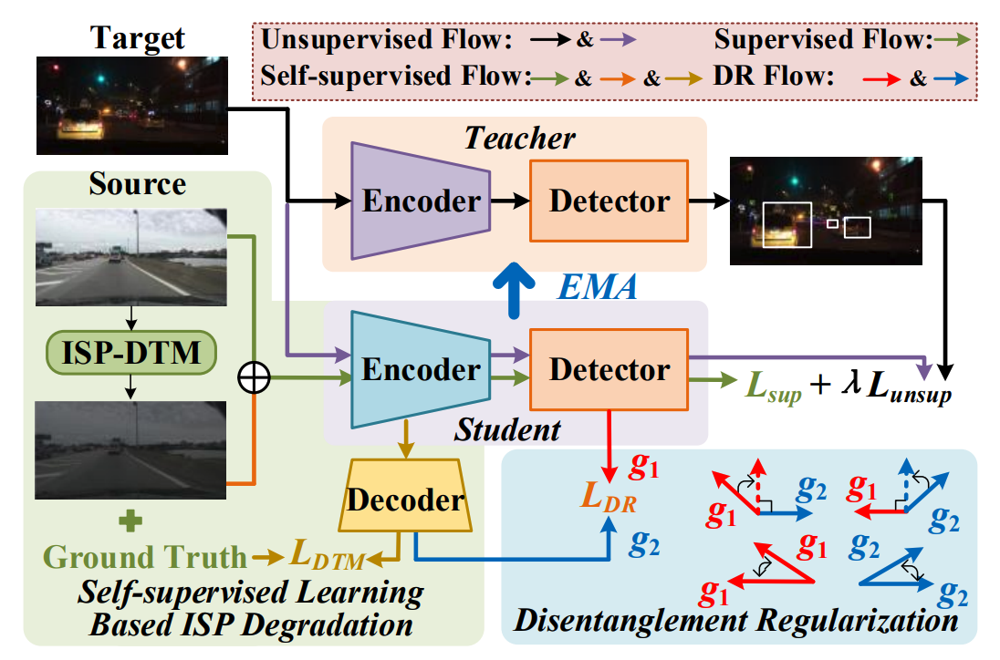
ISP-Teacher:Image Signal Process with Disentanglement Regularization for Unsupervised Domain Adaptive Dark Object Detection
AAAI 2024
Journal
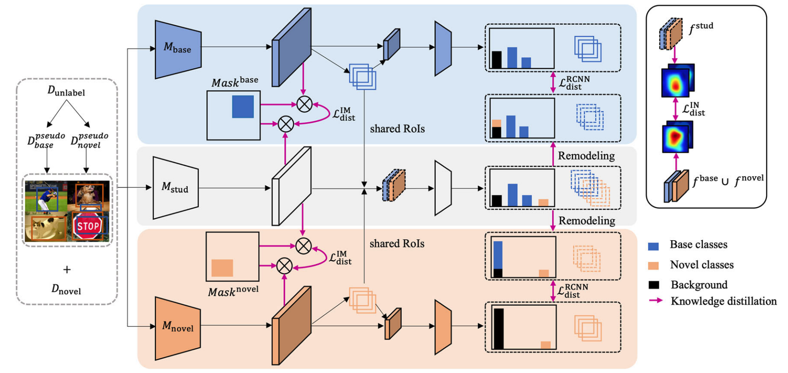
Towards Non Co-occurrence Incremental Object Detection with Unlabeled In-the-Wild Data
International Journal of Computer Vision 2024
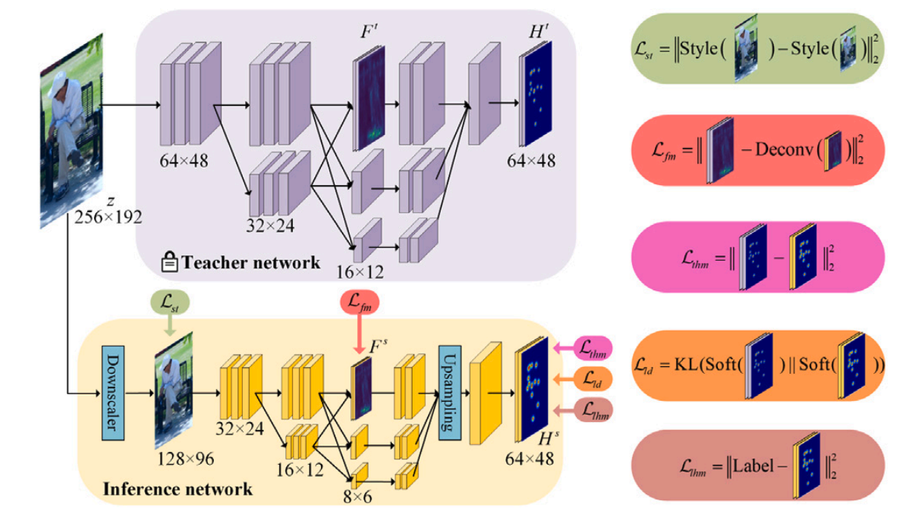
Vital information is only worth one thumbnail: Towards efficient human pose estimation
Pattern Recognition 2024
2023
Conference
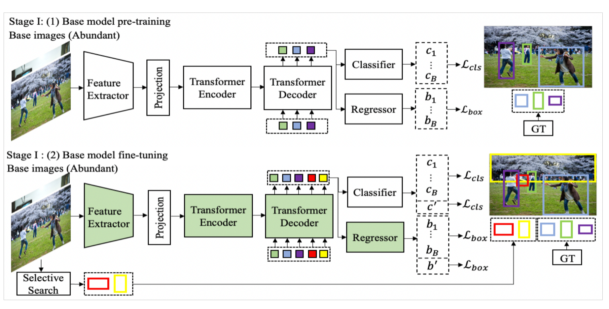
Incremental-detr: Incremental few-shot object detection via self-supervised learning
AAAI 2023

Journal
2022
Journal
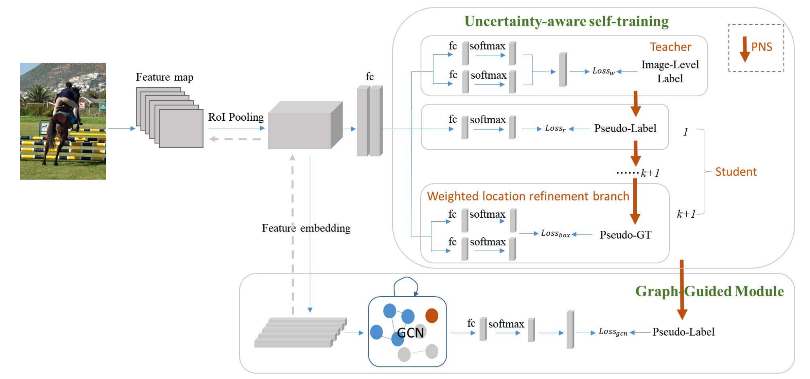
Uncertainty-aware graph-guided weakly supervised object detection
IEEE Transactions on Circuits and Systems for Video Technology 2022
2021
Conference
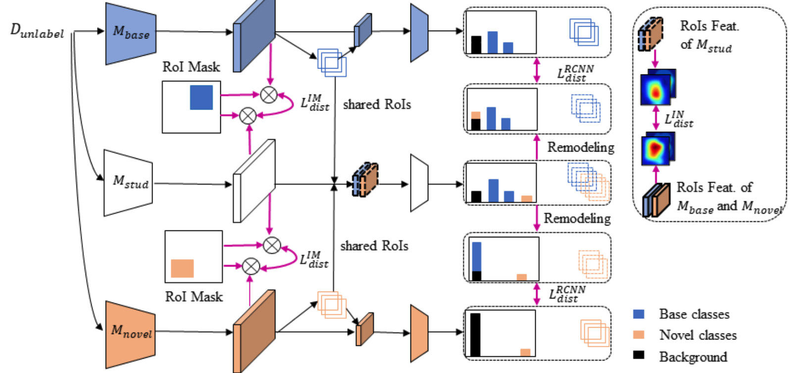
Bridging non co-occurrence with unlabeled in-the-wild data for incremental object detection
Neurips 2021
2020
Journal
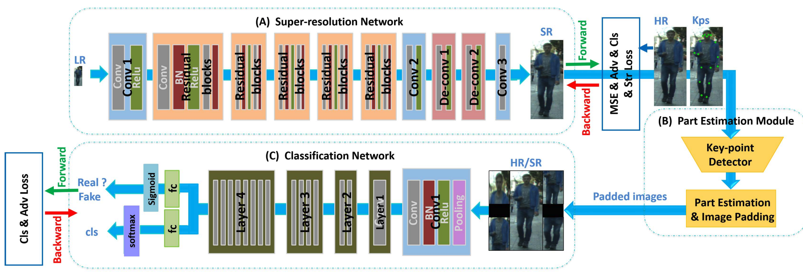
KGSNet: Key-point-guided super-resolution network for pedestrian detection in the wild
IEEE Transactions on Neural Networks and Learning Systems 2020
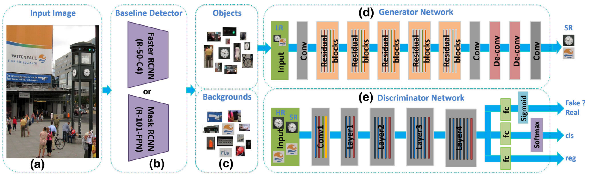
Multi-task generative adversarial network for detecting small objects in the wild
International Journal of Computer Vision 2020
2019
Journal
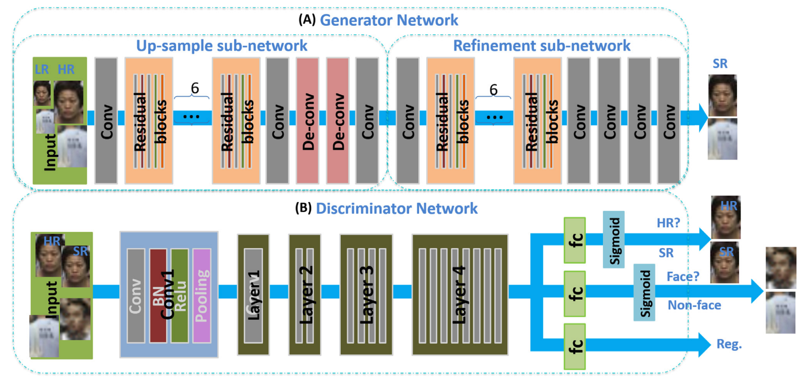
Detecting small faces in the wild based on generative adversarial network and contextual information
Pattern Recognition 2019
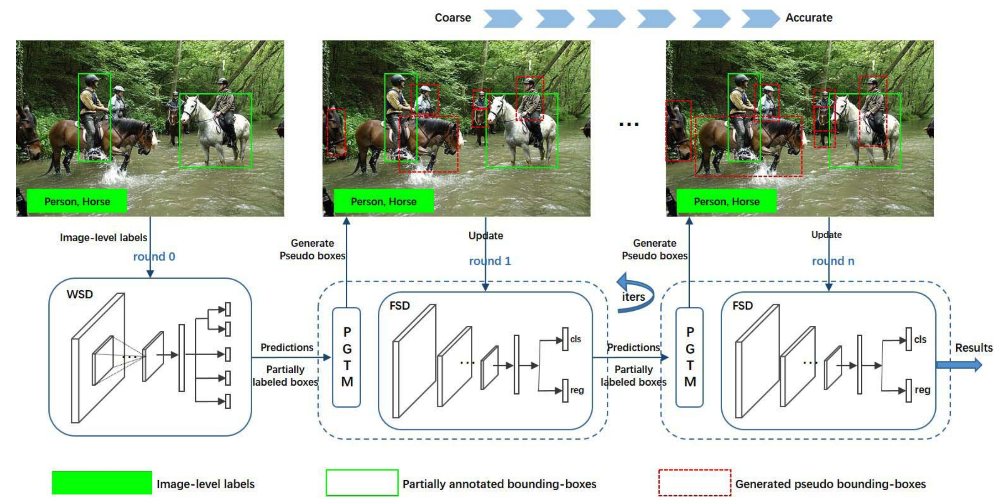
Beyond weakly supervised: Pseudo ground truths mining for missing bounding-boxes object detection
IEEE Transactions on Circuits and Systems for Video Technology 2019
2018
Conference
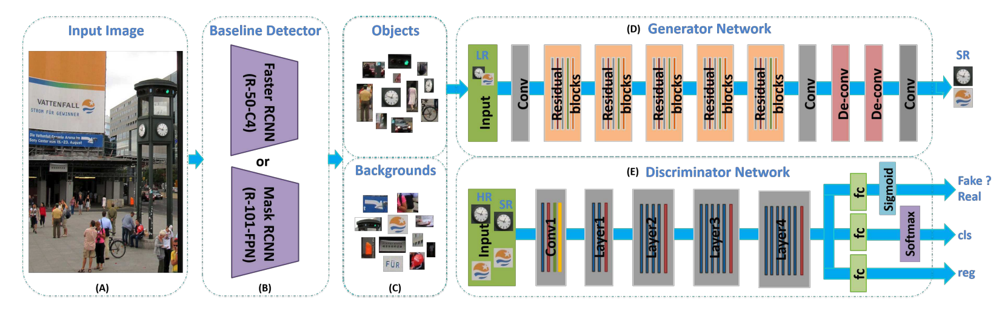
Sod-mtgan: Small object detection via multi-task generative adversarial network
CVPR 2018
Journal
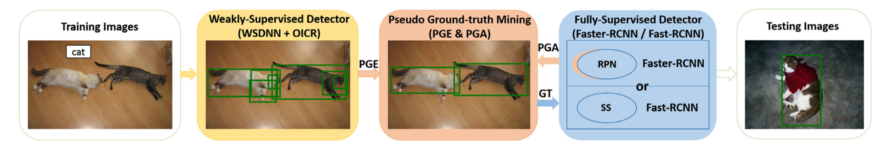
Weakly-supervised object detection via mining pseudo ground truth bounding-boxes
Pattern Recognition 2018
Beyond weakly supervised: Pseudo ground truths mining for missing bounding-boxes object detection
IEEE Transactions on Circuits and Systems for Video Technology 2019